第12回 数物セミナー合同合宿 開催報告
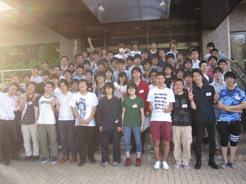
0.概要
・期間：2015年9月15日（火）～9月18日（金）
・対象：数学、物理に興味のある学部生
・参加人数：68名
・参加費：8000円
・開催場所：名古屋市青少年宿泊センター
1.参加者について
当日の参加者は68名、遅刻者3名、早退者2名でした。
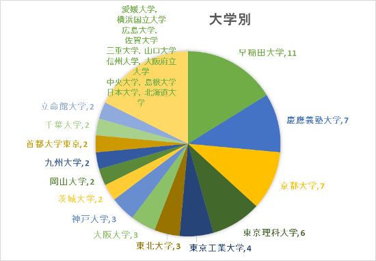
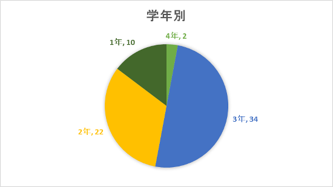
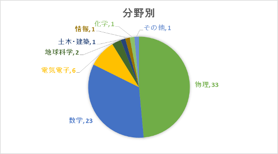
2.合宿期間中の事故の有無
合宿期間中の活動は、加入していた保険が適用されるような大きな事故もなく安全に活動することができました。今回は開催場所が最寄りの駅から徒歩15～20分ほどだったため、遅刻者・早退者ともに送迎は行いませんでした。
3.合宿の主な活動の様子
開会式～レクリエーション
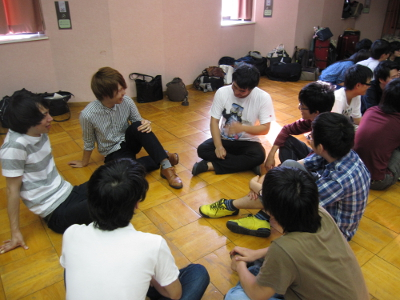
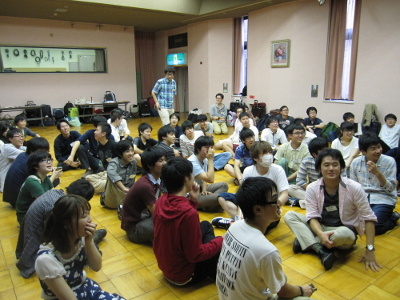
リレーセミナー
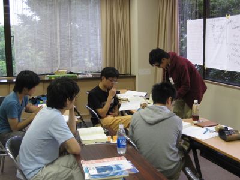
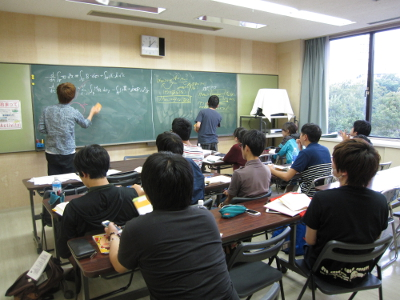
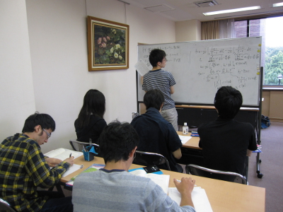
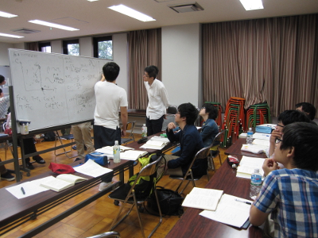
夜ゼミ
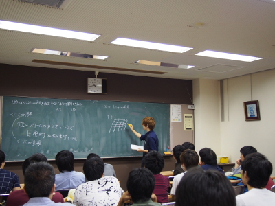
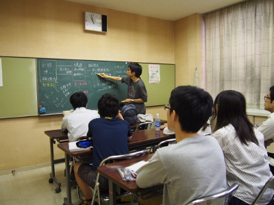
特別講義
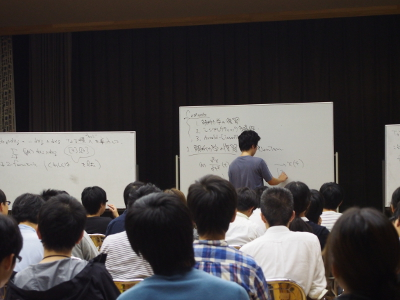
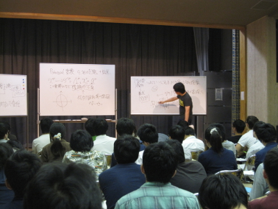
空き時間/夜
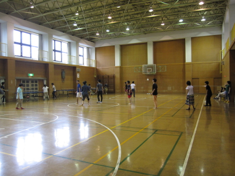
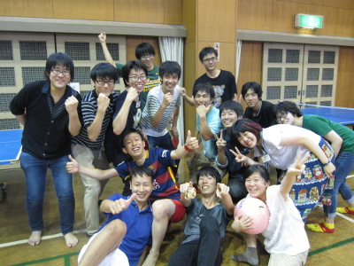
4.合宿を終えて(個人的な感想を含みます)
今回の合宿はいつもの国立青少年自然の家ではなく、名古屋市の宿泊施設で開催しました。応募者が90人を超え、心苦しくも抽選を行いました。今回の施設は参加人数に対して浴室や食堂、研修室が小さかったため、基本的にリレーセミナーの班ごとに順番に利用してもらう形にしました。これにより、いつもの”夜ゼミ”は昼間になり、交流も少なくなりました。全体として数物合宿のセミナーの環境としてはあまり良いものを提供できず、参加者の皆様には本当に申し訳なかったと感じています。班ごとに異なる複雑なスケジュールで混乱状態にならないか不安でしたが、運営委員の方々、参加者の皆様の多大なる協力により、4日間ともスムーズに進行することができました。リレーセミナーで活発な議論が起こったり、夕ゼミで独自のセミナーが生まれたりしてよかったと思います．
準備から合宿最終日まで、約半年間ありがとうございました。今後は7代目合同合宿委員長として、次の第13回合同合宿をしっかりサポートし、合宿をより良いものにしていきたいと思います。
第12回数物セミナー合同合宿実行委員長
岡山大学理学部物理学科3年
佐藤 帯子
会計報告
会計報告につきましては こちらのpdf をご参照ください。